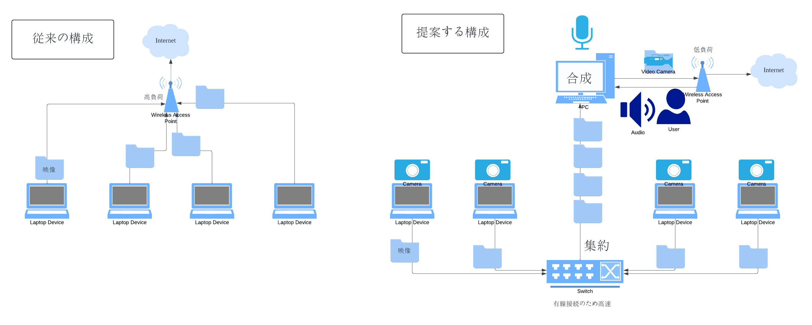
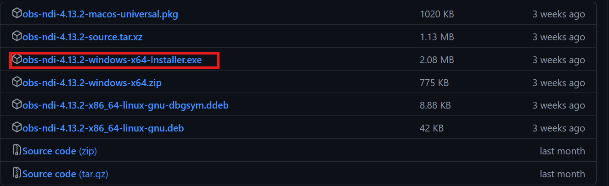

現在、鳥大オケではオンラインで三原先生と繋ぎ、指導していただくオンライン合奏が行われていますが、通信状況が不安定で、映像が途絶えることが多々あります。
データダイエットプロジェクトは、この状況を改善するためのプロジェクトです。 このためには専用のソフト、設定が必要になるため、下の文章の手順に従って設定を行ってください。 なお、このページはデータ量削減のため、装飾を削減しております（手抜き）。本来ルータなどの通信機器は、送信側と受信側の一対一の通信しか行えず、この送信・受信する機器を高速で切り替えることで複数台のパソコンが同時に接続しているように見せています。
オンライン合奏では、複数のパソコンがSkypeサーバーに同時に接続する必要があり、この時のデータ量や切り替え回数が膨大になり、ルータに大きな負荷をかけています。 そこで、これら複数のパソコンをルータを介さずネットワークを構築し、中心となるパソコンで映像を合成しルータに接続することで、送受信するデータ量を大幅に減らす接続方法を提案します。 これらの設定を行うと、NDIを使用している間、カメラ用機器のカメラ、マイクへのアクセス権限が映像送信機機に移ります。
こちらから、インストールしてください。
インストール後、自動構成ウィザードが開かれますが、キャンセルを押してください。
こちらのサイトから、.exeファイルをダウンロードしてインストールします。
インストールを実行しようとすると、セキュリティ警告がでます。「詳細情報」をクリックして、実行します。
インストール後にネットワークに関する警告が出てくるので、アクセスを許可してください。これを許可しないと、通信ができません。
こちらをクリックして、ダウンロード・インストールします。
0.LANケーブルでPCとスイッチングハブを接続します。
1.OBS Studioを再起動し、「ツール」から、「NDI™ Output settings」をクリックします。
2.「Main Output」にチェックをいれ、適当な名前を付けてOKをクリックします。
3.「ソース」にある＋ボタンを押し、「映像キャプチャデバイス」をクリックします。
PCのwifiを切断して設定完了です。
0.LANケーブルでPCとスイッチングハブを接続します。
1.OBS Studioを再起動します。
2.「ソース」にある＋ボタンを押し、「NDI™ Output settings」をクリックします。
3.Source nameでカメラ用機器を選択します。
4.これをカメラ機の台数分追加します。
5.最後に右下にある、「仮想カメラ開始」をクリックして会議に参加してください。
映像送信機機は、全員の良く見える場所に設置し、先生の映像を投影します。
カメラ用機器は、映像を送信するだけです。マイクのオン、オフは映像送信機器で操作可能です。
参考にしたサイト